| Variable | Ítem(s) | Escala | Módulo |
|---|---|---|---|
| Vio. control | Fuerza Carabineros en protestas (d3_1) + armas agricultores (d3_2) | 1–5 (α=.77) | ELRI D |
| Vio. resguardo | Tomas de terrenos (d4_2) + corte carreteras (d4_3) | 1–5 (α=.75) | ELRI D |
| Id. causa indígena | Me identifico con la causa indígena (d6_1) | 1–5 | ELRI D |
| Id. con Chile | Identificación con Chile (a6) | 1–5 | ELRI A |
| Perc. desigualdad | Condiciones de vida indígenas vs. no ind. (c22, invertida) | 1–5 | ELRI C |
| Perc. injusticia | Diferencia de condiciones justa/injusta (c23, invertida) | 1–5 | ELRI C |
| Apoyo moviliz. | Apoyo a movilizaciones indígenas (c25) | 1–5 | ELRI C |
Estado de excepción, identidad étnica y justificación de la violencia: evidencia cuasi-experimental exploratoria de un panel longitudinal en Chile
Resumen
Este artículo examina en qué medida el período del estado de excepción constitucional declarado en La Araucanía y el Biobío (octubre de 2021) se asocia con cambios diferenciales en la justificación de la violencia entre personas indígenas y no indígenas según su cercanía territorial al conflicto. Con el panel longitudinal ELRI (N = 1.592; olas 2, 3 y 4, 2017–2022) se implementa una estrategia exploratoria de diferencias-en-diferencias mediante triple interacción (período × identidad indígena × zona de excepción). Los resultados sugieren un patrón consistente con un cambio diferencial posterior, aunque no concluyente causalmente: la interacción Ola 4 × identidad indígena × zona de excepción es positiva y estadísticamente significativa para la justificación de violencia de control social (acciones coercitivas de agentes estatales o civiles contra demandas indígenas; β = 0,908, p < .01) y de violencia de resguardo territorial (acciones disruptivas atribuidas a actores indígenas en defensa territorial o política; β = 0,954, p < .01), sin efectos significativos en la ola 3. Un análisis complementario del plebiscito de 2022 indica que la justificación de violencia de control social se asocia positivamente con el voto Rechazo (OR = 1,36), mientras que la de resguardo territorial se asocia negativamente (OR = 0,81), en direcciones compatibles con un posible canal actitudinal. Se discuten implicaciones para identidad social, justicia procedimental y represión estatal en contextos de conflicto étnico subestatal.
Palabras clave: conflicto mapuche, estado de excepción, justificación de la violencia, panel longitudinal, diferencias en diferencias, plebiscito 2022
1 Introducción
El conflicto entre el Estado chileno y los pueblos originarios —particularmente el pueblo mapuche— ha escalado sostenidamente desde mediados de los 2000. La violencia en el territorio mapuche ha sido abordada desde múltiples ángulos: estudios históricos documentan la colonización y la usurpación territorial (Bengoa, 2002), mientras que la literatura comparada sobre raza y desarrollo en Chile subraya la persistencia de desigualdades estructurales (Richards, 2013). Sin embargo, la relación entre intervenciones estatales coercitivas y las actitudes de la población civil hacia distintos tipos de violencia permanece poco explorada con diseños longitudinales.
La declaración del estado de excepción constitucional de emergencia el 19 de octubre de 2021, que militarizó comunas de La Araucanía y el Biobío, constituyó una de las intervenciones estatales coercitivas más visibles en el territorio desde el retorno a la democracia. Esta coyuntura ofrece una oportunidad analítica para estudiar cómo un período de intensificación represiva se asocia con cambios diferenciales en actitudes hacia la violencia en una población dividida por identidad étnica y territorio. El plebiscito constitucional de septiembre de 2022, capturado longitudinalmente en el período anterior, contemporáneo y posterior al estado de excepción, permite además explorar vínculos entre esas actitudes y un resultado electoral concreto.
Este artículo responde a la siguiente pregunta de investigación: ¿en qué medida el período del estado de excepción se asocia con cambios diferenciales en la justificación de la violencia entre personas indígenas y no indígenas, según su cercanía territorial al conflicto?
La contribución del estudio es triple. Primero, aporta evidencia longitudinal exploratoria —no una prueba causal definitiva— sobre un episodio de represión estatal en el conflicto mapuche contemporáneo, utilizando un panel con diseño espejo. Segundo, distingue analíticamente entre violencia de control social (justificación de acciones coercitivas de agentes estatales o civiles contra demandas indígenas) y violencia de resguardo territorial (justificación de acciones disruptivas atribuidas a actores indígenas en defensa territorial o política), marcos morales que la literatura frecuentemente agrupa. Tercero, examina de forma complementaria si esas actitudes se asocian con el voto Rechazo en 2022, un vínculo poco documentado en democracias latinoamericanas con conflictos étnicos subestatales (Blattman, 2009).
El artículo se organiza de la siguiente manera. La Sección 2 presenta el marco teórico e hipótesis. La Sección 3 describe el diseño, los datos y las variables. La Sección 4 especifica los modelos estadísticos. La Sección 5 expone los hallazgos empíricos. La Sección 6 interpreta los resultados, y la Sección 7 discute limitaciones y robustez antes de las conclusiones.
2 Marco teórico
2.2 Justicia procedimental y legitimidad institucional
La teoría de justicia procedimental establece que la percepción de trato justo por parte de las instituciones —independientemente de los resultados— predice cumplimiento normativo y legitimidad institucional (Tyler, 1990; Tyler & Huo, 2002). Cuando las instituciones coercitivas son percibidas como parciales, la legitimidad del uso de la fuerza estatal tiende a erosionarse, particularmente entre los grupos afectados (Bradford et al., 2014; Jackson et al., 2012). En este estudio no se estima un modelo formal de mediación; la justicia procedimental se discute como marco interpretativo complementario.
Hipótesis 2
La percepción de justicia procedimental se asociará con las actitudes hacia la violencia y con el comportamiento electoral en el plebiscito de 2022, controlando por identidad étnica, zona y variables sociodemográficas.
2.3 Intervención estatal coercitiva y actitudes hacia la violencia
La literatura sobre efectos contraproducentes de la represión estatal sugiere que la acción coercitiva del Estado puede asociarse con movilización o endurecimiento actitudinal entre los grupos reprimidos (Davenport, 2007; Francisco, 2004; Gurr, 1970). En el contexto mapuche, estudios cualitativos documentan procesos de este tipo (Bengoa, 2002; Richards, 2013; Tricot, 2013), pero con escasa evidencia longitudinal cuantitativa.
Hipótesis 3
El período posterior al estado de excepción se asociará con un aumento diferencial en la justificación de la violencia entre personas indígenas residentes en zonas de excepción, tanto en violencia de control social como en violencia de resguardo territorial.
Hipótesis 4
El efecto diferencial será mayor en la ola 4 que en la ola 3, consistente con un patrón rezagado de reconfiguración actitudinal.
2.4 Violencia política y comportamiento electoral
La relación entre actitudes hacia la violencia política y preferencias electorales ha sido documentada en contextos de conflicto civil (Blattman, 2009), pero raramente en democracias con conflictos étnicos subestatales. El plebiscito chileno de 2022 ofreció una división electoral clara: la opción Rechazo fue asociada discursivamente con mayor control estatal y escepticismo hacia los derechos colectivos indígenas reconocidos en el texto propuesto [Zaller (1992); ver también literatura sobre plurinacionalidad y opinión pública, [referencia por verificar]].
Hipótesis 5
La justificación de la violencia de control social se asociará positivamente con el voto Rechazo, mientras que la justificación de la violencia de resguardo territorial se asociará negativamente.
3 Diseño y datos
3.1 La Encuesta Longitudinal de Relaciones Interculturales (ELRI)
La ELRI es un panel probabilístico con diseño espejo que entrevista paralelamente a muestras de población indígena y no indígena en Chile. Se utilizan las olas 2 (2017), 3 (2021) y 4 (2022), reteniendo solo los 1.592 individuos presentes en las cuatro olas (panel balanceado). La identidad étnica se fija desde la ola 1 para evitar inconsistencias de autoidentificación entre mediciones.
| Ola | Año | Período | Rol en análisis |
|---|---|---|---|
| 2 | 2017 | Pre-estallido, pre-excepción | Baseline (t = 0) |
| 3 | 2021 | Estado de excepción activo | Tratamiento (t = 1) |
| 4 | 2022 | Post-excepción, plebiscito | Post (t = 2) |
3.2 Estrategia de identificación cuasi-experimental
El estado de excepción fue declarado el 19 de octubre de 2021 en comunas específicas de La Araucanía y el Biobío. Esta asignación territorial exógena permite construir una estrategia de diferencias-en-diferencias (DiD) con tres períodos y cuatro grupos de comparación (identidad × zona).
| Grupo | Zona | Período tratamiento |
|---|---|---|
| Indígena / cerca | Excepción | Tratados |
| Indígena / lejos | Sin excepción | Control |
| No indígena / cerca | Excepción | Tratados |
| No indígena / lejos | Sin excepción | Control |
El supuesto de tendencias paralelas no es testeable formalmente con una sola ola pre-tratamiento (ola 2). Por esta razón, los resultados se interpretan como cambios diferenciales compatibles con una lógica de diferencias-en-diferencias extendida, pero no como estimaciones causales definitivas. Este análisis se presenta como evidencia cuasi-experimental exploratoria: los hallazgos son compatibles con una interpretación de cambio diferencial posterior al estado de excepción, aunque no concluyente causalmente. En la ola 2, las diferencias por zona de excepción van en dirección opuesta a los patrones post-tratamiento observados en las trayectorias descriptivas (Figura 1), lo que es consistente —aunque no establece— con la plausibilidad del contrafactual.
3.3 Variables
En todo el manuscrito se emplean dos variables dependientes principales. La violencia de control social captura la justificación de acciones coercitivas ejercidas por agentes estatales o civiles contra demandas indígenas (fuerza de Carabineros en protestas indígenas y uso de armas por agricultores contra grupos indígenas). La violencia de resguardo territorial captura la justificación de acciones disruptivas atribuidas a actores indígenas en defensa territorial o política (tomas de terrenos y cortes de caminos).
La variable de tratamiento se define como
\[ D_{it} = \mathbb{1}[\text{zona}_i = \text{excepción}] \times \mathbb{1}[t = 3] \]
y toma valor 1 solo para individuos en comunas de excepción durante la ola 3. Los controles incluyen identificación con Chile, identificación con la causa indígena, percepciones de desigualdad e injusticia (c22 y c23 invertidas), sexo, edad y zona urbano/rural. Esta última se incluye condicionalmente según la correlación con cerca_conflicto (umbral |r| ≤ 0,5; en estos datos r = 0,203, por lo que se incluye).
4 Modelo estadístico
4.1 Modelo multinivel de efectos fijos con DiD
Las observaciones están anidadas en individuos (N = 1.592) a través del tiempo. Se estiman modelos multinivel con intercepto aleatorio por folio ((1 | folio)). La categoría de referencia combina personas no indígenas, residentes lejos de la zona de excepción, en la ola 2 (período pre-tratamiento). El coeficiente principal de interés es la triple interacción Ola 4 × identidad indígena × zona de excepción, que estima el cambio diferencial post-tratamiento del grupo indígena residente en zona de excepción respecto a los grupos de comparación. En conjunto, el modelo opera como una triple interacción entre período, identidad indígena y cercanía territorial al conflicto.
El modelo base (M1) se especifica en Ecuación 1:
\[ \begin{aligned} Y_{it} = \beta_0 &+ \beta_1 \text{Ola3}_{it} + \beta_2 \text{Ola4}_{it} + \beta_3 \text{Indi}_i + \beta_4 \text{Zona}_i \\ &+ \mathbf{X}_{it}'\boldsymbol{\gamma} + u_i + \varepsilon_{it} \end{aligned} \tag{1}\]
El modelo DiD completo (M2) incorpora interacciones de segundo y tercer orden (Ecuación 2):
\[ \begin{aligned} Y_{it} = \beta_0 &+ \sum_{t \in \{3,4\}} \beta_t \text{Ola}_t + \beta_3 \text{Indi}_i + \beta_4 \text{Zona}_i \\ &+ \sum_{t} \delta_t (\text{Ola}_t \times \text{Zona}_i) + \sum_{t} \theta_t (\text{Ola}_t \times \text{Indi}_i) \\ &+ \lambda (\text{Indi}_i \times \text{Zona}_i) + \sum_{t} \tau_t (\text{Ola}_t \times \text{Indi}_i \times \text{Zona}_i) \\ &+ \mathbf{X}_{it}'\boldsymbol{\gamma} + u_i + \varepsilon_{it} \end{aligned} \tag{2}\]
Los coeficientes de interés son \(\tau_t\), especialmente \(\tau_4\) (ola 4 × indígena × zona excepción), que captura el efecto diferencial post-tratamiento para indígenas en zona de excepción respecto a todos los demás grupos (Ecuación 3):
\[ \begin{aligned} \hat{\tau}_4 =\;& \underbrace{ (\bar{Y}^{\text{indi,cerca}}_{4} - \bar{Y}^{\text{indi,cerca}}_{2}) - (\bar{Y}^{\text{noindi,cerca}}_{4} - \bar{Y}^{\text{noindi,cerca}}_{2}) }_{\text{DiD zona excepción}} \\ &- \underbrace{ (\bar{Y}^{\text{indi,lejos}}_{4} - \bar{Y}^{\text{indi,lejos}}_{2}) - (\bar{Y}^{\text{noindi,lejos}}_{4} - \bar{Y}^{\text{noindi,lejos}}_{2}) }_{\text{DiD zona control}} \end{aligned} \tag{3}\]
4.2 Coeficiente de correlación intraclase (ICC)
El ICC cuantifica la proporción de varianza atribuible a diferencias estables entre individuos (Ecuación 4):
\[ \text{ICC} = \frac{\sigma_u^2}{\sigma_u^2 + \sigma_\varepsilon^2} \tag{4}\]
Los ICC observados oscilan entre 0,12 y 0,20 según la variable dependiente, indicando que una proporción relevante de la varianza es within-person, lo que justifica el diseño longitudinal.
4.3 Comparación de modelos
M1 vs. M2 se compara mediante likelihood ratio test (LRT) con 5 grados de libertad adicionales. En ambas variables dependientes, la especificación DiD mejora significativamente el ajuste (\(\chi^2_{(5)} > 24\), p < .001).
4.4 Análisis complementario: voto Rechazo (ola 4)
Como extensión electoral exploratoria, y sin estimar mediación causal formal, se examina si las actitudes hacia la violencia se asocian con el voto en el plebiscito de 2022. Para el plebiscito (ola 4) se estima (Ecuación 5):
\[ \begin{aligned} \log \frac{P(\text{Rechazo}_i)}{1 - P(\text{Rechazo}_i)} = \alpha &+ \beta_1 \hat{Y}^{\text{ctrl}}_i + \beta_2 \hat{Y}^{\text{resguardo}}_i \\ &+ \beta_3 \text{Apoyo}_i + \mathbf{Z}_i'\boldsymbol{\phi} \end{aligned} \tag{5}\]
Se estiman tres versiones: (a) participación electoral, (b) Rechazo vs. resto entre votantes, y (c) Rechazo vs. Apruebo estricto (excluye nulos/blancos).
5 Resultados
5.1 Estadísticos descriptivos
Tabla 2 presenta las características sociodemográficas en la ola 2 (baseline). Tabla 3 resume la distribución de variables dependientes e independientes clave por período e identidad étnica.
| Variable | Overall N = 1,5801 |
Identidad étnica
|
p-value2 | |
|---|---|---|---|---|
| no_indi N = 7351 |
indi N = 8451 |
|||
| Sexo (mujer) | 0.7 | |||
| hombre | 467 (30%) | 221 (30%) | 246 (29%) | |
| mujer | 1,113 (70%) | 514 (70%) | 599 (71%) | |
| Grupo etario | 0.003 | |||
| 18_24 | 102 (6.5%) | 42 (5.7%) | 60 (7.1%) | |
| 25_34 | 242 (15%) | 93 (13%) | 149 (18%) | |
| 35_44 | 240 (15%) | 99 (13%) | 141 (17%) | |
| 45_54 | 325 (21%) | 153 (21%) | 172 (20%) | |
| 55_64 | 347 (22%) | 179 (24%) | 168 (20%) | |
| 65+ | 323 (20%) | 168 (23%) | 155 (18%) | |
| Zona (rural) | 0.12 | |||
| 1 | 1,219 (77%) | 580 (79%) | 639 (76%) | |
| 2 | 361 (23%) | 155 (21%) | 206 (24%) | |
| Zona de excepción | 0.9 | |||
| lejos | 1,343 (85%) | 626 (85%) | 717 (85%) | |
| cerca | 237 (15%) | 109 (15%) | 128 (15%) | |
| Identificación con Chile | <0.001 | |||
| 1 | 14 (0.9%) | 8 (1.1%) | 6 (0.7%) | |
| 2 | 50 (3.2%) | 21 (2.9%) | 29 (3.4%) | |
| 3 | 109 (6.9%) | 42 (5.7%) | 67 (7.9%) | |
| 4 | 478 (30%) | 184 (25%) | 294 (35%) | |
| 5 | 927 (59%) | 479 (65%) | 448 (53%) | |
| Id. pueblo originario | <0.001 | |||
| 1 | 260 (17%) | 223 (31%) | 37 (4.4%) | |
| 2 | 232 (15%) | 154 (21%) | 78 (9.3%) | |
| 3 | 270 (17%) | 137 (19%) | 133 (16%) | |
| 4 | 406 (26%) | 146 (20%) | 260 (31%) | |
| 5 | 400 (26%) | 66 (9.1%) | 334 (40%) | |
| Id. causa indígena | <0.001 | |||
| 1 | 141 (9.0%) | 97 (13%) | 44 (5.3%) | |
| 2 | 200 (13%) | 134 (18%) | 66 (7.9%) | |
| 3 | 317 (20%) | 175 (24%) | 142 (17%) | |
| 4 | 662 (42%) | 252 (35%) | 410 (49%) | |
| 5 | 242 (15%) | 68 (9.4%) | 174 (21%) | |
| 1 n (%) | ||||
| 2 Pearson’s Chi-squared test | ||||
| variable | M | SD |
|---|---|---|
| pre - no_indi | ||
| Vio. control | 2.03 | 1.05 |
| Vio. resguardo | 1.72 | 1.01 |
| Perc. desigualdad | 3.04 | 0.78 |
| Perc. injusticia | 3.62 | 0.79 |
| Apoyo movilizaciones | 2.35 | 1.27 |
| Id. con Chile | 4.51 | 0.82 |
| Id. causa indígena | 3.08 | 1.20 |
| pre - indi | ||
| Vio. control | 1.88 | 0.99 |
| Vio. resguardo | 1.93 | 1.15 |
| Perc. desigualdad | 3.13 | 0.73 |
| Perc. injusticia | 3.63 | 0.85 |
| Apoyo movilizaciones | 2.80 | 1.37 |
| Id. con Chile | 4.36 | 0.83 |
| Id. causa indígena | 3.72 | 1.04 |
| tratamiento - no_indi | ||
| Vio. control | 2.07 | 1.08 |
| Vio. resguardo | 2.22 | 1.17 |
| Perc. desigualdad | 3.27 | 0.81 |
| Perc. injusticia | 3.82 | 0.70 |
| Apoyo movilizaciones | 2.57 | 1.34 |
| Id. con Chile | 4.25 | 0.98 |
| Id. causa indígena | 3.38 | 1.02 |
| tratamiento - indi | ||
| Vio. control | 1.94 | 1.05 |
| Vio. resguardo | 2.47 | 1.17 |
| Perc. desigualdad | 3.28 | 0.74 |
| Perc. injusticia | 3.86 | 0.70 |
| Apoyo movilizaciones | 2.93 | 1.33 |
| Id. con Chile | 4.17 | 0.91 |
| Id. causa indígena | 3.86 | 0.83 |
| post - no_indi | ||
| Vio. control | 2.45 | 1.30 |
| Vio. resguardo | 1.91 | 1.20 |
| Perc. desigualdad | 3.19 | 0.77 |
| Perc. injusticia | 3.69 | 0.84 |
| Apoyo movilizaciones | 2.41 | 1.25 |
| Id. con Chile | 4.43 | 0.85 |
| Id. causa indígena | 3.12 | 1.25 |
| post - indi | ||
| Vio. control | 2.35 | 1.32 |
| Vio. resguardo | 2.23 | 1.25 |
| Perc. desigualdad | 3.18 | 0.78 |
| Perc. injusticia | 3.74 | 0.94 |
| Apoyo movilizaciones | 2.78 | 1.27 |
| Id. con Chile | 4.20 | 0.86 |
| Id. causa indígena | 3.89 | 0.98 |
5.2 Trayectorias longitudinales
Figura 1 muestra las trayectorias medias de las dos variables dependientes —violencia de control social y de resguardo territorial— por identidad étnica y zona. En el baseline (ola 2), la zona de excepción exhibe menor justificación de violencia de resguardo territorial que fuera de ella, patrón que se invierte en olas 3 y 4, compatible con la lógica de un cambio diferencial posterior.

5.3 Modelos multinivel DiD
Tabla 4 presenta los modelos M1 y M2 para ambas variables dependientes. La comparación LRT indica que la especificación DiD (Ecuación 2) mejora el ajuste respecto a M1 en violencia de control social (\(\chi^2 = 25{,}6\), p < .001) y resguardo territorial (\(\chi^2 = 24{,}6\), p < .001).
El hallazgo central es la interacción triple Ola 4 × identidad indígena × zona de excepción. Los coeficientes correspondientes en ola 3 no alcanzan significancia estadística, pero los de ola 4 sí: β = 0,908 (p = .007) para violencia de control social y β = 0,954 (p = .007) para violencia de resguardo territorial. Los resultados muestran que esta interacción es positiva y estadísticamente significativa para ambas variables dependientes. Esto indica que, en comparación con los grupos de referencia (personas no indígenas lejos de la zona de excepción en ola 2), las personas indígenas residentes en zonas de excepción presentan un aumento diferencial posterior en la justificación de ambos tipos de violencia. Este patrón post-tratamiento rezagado es consistente con H3 y H4, aunque debe interpretarse como evidencia exploratoria compatible con reconfiguración actitudinal, no como un efecto causal establecido.
La simetría entre identificación con la causa indígena (positiva sobre resguardo territorial, negativa sobre control social) e identificación con Chile (dirección opuesta) es consistente con H1 y con predicciones de la SIT.
Figura 2 muestra medias predichas del modelo M2 para los cuatro grupos (identidad × zona) en los tres períodos, facilitando la lectura del patrón DiD para audiencias no especializadas.

| Vio. control (M1) | Vio. control (DiD) | Vio. resguardo (M1) | Vio. resguardo (DiD) | |
|---|---|---|---|---|
| Intercepto | 3.331*** | 3.343*** | 1.542*** | 1.555*** |
| (0.226) | (0.226) | (0.241) | (0.240) | |
| Ola 3 (tratamiento) | 0.097 | 0.081 | 0.360*** | 0.318*** |
| (0.074) | (0.077) | (0.078) | (0.081) | |
| Ola 4 (post) | 0.366*** | 0.359*** | 0.095 | 0.082 |
| (0.080) | (0.084) | (0.084) | (0.089) | |
| Indígena | -0.056 | -0.044 | 0.040 | 0.071 |
| (0.079) | (0.083) | (0.084) | (0.088) | |
| Zona excepción | 0.332*** | 0.075 | -0.113 | -0.384+ |
| (0.074) | (0.189) | (0.079) | (0.201) | |
| Mujer | -0.042 | -0.048 | -0.078 | -0.082 |
| (0.052) | (0.052) | (0.056) | (0.056) | |
| edad25_34 | -0.004 | 0.029 | -0.105 | -0.074 |
| (0.144) | (0.143) | (0.152) | (0.152) | |
| edad35_44 | 0.179 | 0.204 | -0.184 | -0.156 |
| (0.147) | (0.146) | (0.156) | (0.155) | |
| edad45_54 | 0.139 | 0.158 | -0.170 | -0.147 |
| (0.142) | (0.142) | (0.151) | (0.150) | |
| edad55_64 | 0.150 | 0.180 | -0.144 | -0.114 |
| (0.141) | (0.141) | (0.150) | (0.149) | |
| edad65+ | 0.315* | 0.338* | -0.199 | -0.174 |
| (0.141) | (0.141) | (0.150) | (0.149) | |
| urbano_rural2 | 0.183** | 0.171** | 0.008 | 0.000 |
| (0.060) | (0.060) | (0.065) | (0.065) | |
| Id. con Chile | -0.045+ | -0.049* | -0.115*** | -0.118*** |
| (0.025) | (0.025) | (0.026) | (0.026) | |
| Id. causa indígena | -0.120*** | -0.128*** | 0.296*** | 0.288*** |
| (0.022) | (0.022) | (0.023) | (0.023) | |
| Perc. desigualdad | -0.144*** | -0.142*** | 0.029 | 0.031 |
| (0.026) | (0.026) | (0.027) | (0.027) | |
| Perc. injusticia | -0.139*** | -0.129*** | -0.006 | 0.001 |
| (0.033) | (0.033) | (0.035) | (0.035) | |
| Ola 3 × Indígena | 0.045 | 0.017 | 0.106 | 0.086 |
| (0.101) | (0.107) | (0.107) | (0.112) | |
| Ola 4 × Indígena | 0.061 | -0.063 | 0.071 | -0.052 |
| (0.107) | (0.114) | (0.114) | (0.120) | |
| Ola 3 × Zona excepción | 0.164 | 0.418 | ||
| (0.245) | (0.259) | |||
| Ola 4 × Zona excepción | 0.101 | 0.145 | ||
| (0.249) | (0.264) | |||
| Indígena × Zona excepción | -0.122 | -0.291 | ||
| (0.259) | (0.276) | |||
| Ola 3 × Indígena × Zona [DiD] | 0.247 | 0.174 | ||
| (0.327) | (0.345) | |||
| Ola 4 × Indígena × Zona [DiD] | 0.908** | 0.954** | ||
| (0.335) | (0.355) | |||
| SD (Intercept folio) | 0.416 | 0.417 | 0.477 | 0.482 |
| SD (Observations) | 0.967 | 0.961 | 1.015 | 1.006 |
| N observaciones | 2275 | 2275 | 2270 | 2270 |
| ICC | 0.156 | 0.159 | 0.181 | 0.187 |
| RMSE | 0.900 | 0.893 | 0.934 | 0.924 |
| + p < 0.1, * p < 0.05, ** p < 0.01, *** p < 0.001 | ||||
| Efectos aleatorios por individuo (folio). ICC = coeficiente de correlación intraclase. RMSE = raíz del error cuadrático medio. + p<.1, * p<.05, ** p<.01, *** p<.001. | ||||
Figura 3 visualiza los efectos fijos del modelo M2 con intervalos de confianza al 95 %. Los puntos en rojo corresponden a interacciones temporales y territoriales relevantes para la estrategia DiD extendida.

5.4 Análisis complementario del plebiscito 2022
Tabla 5 reporta los modelos logísticos de participación y voto como extensión electoral exploratoria. Entre quienes votaron (n ≈ 994), la justificación de violencia de control social se asocia positivamente con el voto Rechazo (OR = 1,36, p < .001), mientras que la justificación de violencia de resguardo territorial se asocia negativamente (OR = 0,81, p < .01). La identidad étnica y la zona de excepción no se asocian directamente con el voto una vez incluidas las actitudes. Estos resultados son consistentes con la existencia de un posible canal actitudinal (H5), pero deben tratarse como evidencia exploratoria: no se estima mediación formal.
| Participó (votó) | Voto Rechazo (vs. resto) | Voto Rechazo (vs. Apruebo) | |
|---|---|---|---|
| Intercepto | 1.389 | 0.704 | 1.063 |
| (1.015) | (0.587) | (0.907) | |
| Indígena | 1.029 | 1.087 | 1.011 |
| (0.177) | (0.173) | (0.171) | |
| Zona excepción | 1.423 | 1.870* | 1.659+ |
| (0.497) | (0.534) | (0.498) | |
| Mujer | 0.973 | 0.771+ | 0.704* |
| (0.163) | (0.117) | (0.115) | |
| edad25_34 | 2.414 | 1.177 | 1.419 |
| (1.406) | (0.857) | (1.045) | |
| edad35_44 | 2.137 | 1.754 | 2.256 |
| (1.237) | (1.276) | (1.663) | |
| edad45_54 | 2.318 | 1.055 | 1.215 |
| (1.324) | (0.760) | (0.884) | |
| edad55_64 | 2.001 | 1.181 | 1.532 |
| (1.136) | (0.851) | (1.117) | |
| edad65+ | 1.598 | 1.230 | 1.522 |
| (0.891) | (0.881) | (1.101) | |
| Justif. vio. control | 1.046 | 1.362*** | 1.366*** |
| (0.077) | (0.089) | (0.096) | |
| Justif. vio. resguardo | 1.025 | 0.808** | 0.799** |
| (0.075) | (0.053) | (0.054) | |
| Justicia procedimental | 1.258** | 1.205** | 1.191* |
| (0.095) | (0.086) | (0.090) | |
| Apoyo movilizaciones | 1.033 | 0.823** | 0.782*** |
| (0.067) | (0.049) | (0.050) | |
| Id. con Chile | 1.083 | 1.120 | 1.114 |
| (0.091) | (0.088) | (0.092) | |
| Id. causa indígena | 0.855* | 0.893+ | 0.866* |
| (0.067) | (0.061) | (0.063) | |
| Indígena × Zona excepción | 1.141 | 0.820 | 0.856 |
| (0.551) | (0.306) | (0.331) | |
| N observaciones | 1448 | 1026 | 961 |
| AIC | 1199.4 | 1307.9 | 1183.3 |
| + p < 0.1, * p < 0.05, ** p < 0.01, *** p < 0.001 | |||
| Odds ratios. + p<.1, * p<.05, ** p<.01, *** p<.001. Solo ola 4. | |||
Figura 4 muestra las probabilidades predichas de voto Rechazo por identidad y zona. Las diferencias entre grupos son modestes una vez controladas las actitudes, lo que es compatible con un posible canal actitudinal entre experiencia territorial del conflicto y comportamiento electoral.

6 Discusión
El hallazgo más relevante no es simplemente que las personas indígenas difieran de las no indígenas, sino que la diferencia se intensifica en el tiempo cuando identidad étnica y exposición territorial al conflicto coinciden.
6.1 Efectos rezagados y reconfiguración actitudinal
El patrón de interacción triple no significativa en ola 3 pero sí en ola 4 es compatible con un proceso de reconfiguración actitudinal posterior al período de excepción, más que con un cambio inmediato durante el tratamiento (Davenport, 2007; Francisco, 2004). Este rezago dialoga con marcos de movilización post-represión y con la literatura cualitativa del conflicto mapuche (Bengoa, 2002; Tricot, 2013). No obstante, al disponer de una sola ola pre-tratamiento y de asignación territorial no aleatoria, la interpretación debe permanecer prudente: los resultados documentan cambios diferenciales posteriores asociados al período analizado, no un efecto causal del estado de excepción en sentido estricto [véase literatura específica sobre el estado de excepción en Chile, referencia por verificar].
6.2 Identidad, territorio y legitimidad de la violencia
La oposición sistemática entre identificación con la causa indígena e identificación con Chile —en direcciones cruzadas sobre ambas variables dependientes— replica en un contexto latinoamericano mecanismos endogrupo-exogrupo de la SIT (Tajfel & Turner, 1986). Esta simetría persiste al controlar percepciones de desigualdad e injusticia, lo que sugiere que la legitimación de distintos tipos de violencia se organiza también por marcos identitarios y territoriales. La distinción entre violencia de control social y de resguardo territorial permite ver que el aumento diferencial posterior en ola 4 afecta a ambas dimensiones entre personas indígenas en zona de excepción, lo que complica narrativas unidimensionales de “represión legitimada” o “resistencia legitimada” por separado.
6.3 Actitudes hacia la violencia y comportamiento electoral
El análisis del plebiscito sugiere que las actitudes hacia la violencia podrían conectar la experiencia territorial del conflicto con el comportamiento electoral, sin estimar mediación causal (Zaller, 1992). La justificación de violencia de control social se asocia con mayor probabilidad de voto Rechazo; la de resguardo territorial, con menor probabilidad. Que identidad étnica y zona no se asocien directamente con el voto una vez incluidas las actitudes es consistente con un posible canal actitudinal, pero también podría reflejar medición imperfecta, endogeneidad o omisión de variables. Futuros estudios con diseños más fuertes y mediciones de justicia procedimental en el tiempo podrían profundizar este vínculo [referencia por verificar: plebiscito constitucional chileno 2022].
6.4 La paradoja del aumento paralelo en ambos tipos de violencia
Un resultado que merece interpretación explícita es el aumento paralelo en la justificación de violencia de control social y de resguardo territorial entre personas indígenas residentes en zonas de excepción durante la ola 4. A primera vista, este patrón puede parecer contraintuitivo: ¿cómo puede incrementarse simultáneamente la legitimación de la coerción estatal o civil y la de acciones disruptivas atribuidas a actores indígenas?
Este hallazgo no debe interpretarse como apoyo simple a la represión estatal. En contextos de conflicto prolongado, la justificación de distintos tipos de violencia puede expresar una normalización situada de la violencia como recurso legítimo en escenarios de alta tensión territorial. También puede reflejar una demanda ambivalente de orden, seguridad, reconocimiento y contención del conflicto: actitudes que no se reducen a un eje único pro-Estado o pro-resistencia.
La evidencia por ítem refuerza esta lectura. Los modelos desagregados muestran coeficientes positivos tanto para la justificación de fuerza policial (β = 0,862, p < .05) como para agricultores armados (β = 0,967, p < .01), y también para tomas de terrenos (β = 1,069, p < .05) y cortes de camino (β = 0,841, p < .05). El patrón no depende exclusivamente de un solo componente del índice, sino que se distribuye entre dimensiones de control y de resguardo territorial. En conjunto, estos resultados sugieren una reconfiguración actitudinal más amplia que una simple polarización unidimensional.
7 Limitaciones y análisis de robustez
El diseño enfrenta limitaciones importantes. Una sola ola pre-tratamiento (ola 2) impide testear formalmente tendencias paralelas. La asignación territorial no es aleatoria: las comunas de excepción son las más expuestas al conflicto. Posible attrition diferencial podría sesgar estimaciones si quienes abandonaron el panel fueron los más expuestos. Difusión mediática del estado de excepción hacia zonas no tratadas podría violar supuestos de independencia (SUTVA). Controles actitudinales (identificación, desigualdad, injusticia) podrían estar parcialmente determinados post-tratamiento y absorber parte del cambio de interés; por ello conviene contrastar especificaciones con y sin ellos. No se estima mediación causal formal entre conflicto, actitudes y voto.
Se recomienda presentar modelos alternativos: Modelo A con controles sociodemográficos solamente; Modelo B con controles completos (identificación, desigualdad, injusticia). El modelo principal reportado corresponde a Modelo B.
7.1 Análisis complementarios de robustez
Para paliar la imposibilidad de testear formalmente tendencias paralelas con una sola ola pretratamiento, se implementaron análisis complementarios de balance en ola 2, propensity score matching (PSM), ponderación inversa de la probabilidad (IPW) con diagnóstico de pesos extremos, un placebo pretratamiento (olas 1–2) y modelos por ítem. El coeficiente de interés en todas las especificaciones es la triple interacción Ola 4 × identidad indígena × zona de excepción.
| Especificación | Vio. control | Vio. resguardo |
|---|---|---|
| Modelo principal M2 | 0.908 ** | 0.954 ** |
| IPW original | 1.469 *** | 0.637 * |
| IPW trim 1–99 % | 1.433 *** | 1.461 *** |
| IPW trim 5–95 % | 1.467 *** | 1.593 *** |
| PSM (nearest neighbor) | 0.594 | 0.517 |
| Placebo ola 1–2 | −0.182 | −0.010 |
Tabla 6 resume los resultados de las especificaciones ya estimadas. En el modelo principal (M2), la interacción triple es positiva y significativa para violencia de control social (β = 0,908, p < .01) y resguardo territorial (β = 0,954, p < .01). El placebo pretratamiento (olas 1–2) no alcanza significancia en ninguna variable dependiente, lo que es compatible con la ausencia de una divergencia equivalente antes del período analizado. En el PSM, los coeficientes mantienen dirección positiva pero pierden significancia estadística, probablemente por la reducción del tamaño muestral emparejado (n = 144 folios).
7.1.1 Ponderación inversa (IPW) y trimming de pesos
El IPW estimado en ola 2 ajusta por diferencias observables en la probabilidad de residir en zona de excepción. La distribución de pesos presenta asimetría y valores extremos que deben reportarse explícitamente (Figura 5). En la especificación original, los pesos oscilan entre 1,00 y 69,6 (mediana = 1,09; media = 1,94; p95 = 6,47; p99 = 13,4). Tras truncar al percentil 5–95 %, el rango se reduce a [1,01; 6,47], con media = 1,54 y mediana inalterada (1,09).
Los resultados del Tabla 6 indican robustez parcial respecto de la dirección del efecto, aunque no del tamaño exacto:
- Violencia de control social. El IPW original (β = 1,469, p < .001) amplifica la magnitud respecto al modelo principal, pero el efecto permanece positivo y altamente significativo tras el trimming (1–99 %: β = 1,433; 5–95 %: β = 1,467). Esto sugiere que el aumento ponderado no parece explicarse exclusivamente por observaciones con pesos extremos; la magnitud es muy estable una vez aplicado el truncamiento.
- Violencia de resguardo territorial. La dirección positiva se mantiene en todas las especificaciones IPW, pero la magnitud es sensible al tratamiento de pesos: el coeficiente pasa de 0,637 (p < .05) en el IPW original a 1,461 (p < .001) con trimming 1–99 % y 1,593 (p < .001) con trimming 5–95 %. La significancia se preserva, pero las magnitudes deben interpretarse con cautela.
En conjunto, la evidencia de robustez es más sólida para la dirección del cambio diferencial posterior que para el tamaño puntual del coeficiente. Los resultados IPW son compatibles con un patrón de aumento diferencial entre personas indígenas en zona de excepción, pero confirman que la ponderación altera sustancialmente las magnitudes estimadas —especialmente en resguardo territorial— y refuerzan la necesidad de mantener un lenguaje prudente en la interpretación cuasi-experimental.
Como análisis adicionales recomendados para futuras versiones del estudio, conviene estimar modelos con controles sociodemográficos solamente (Modelo A), excluir urbano_rural, incorporar efectos fijos individuales (within), reconstruir índices mediante PCA, excluir comunas limítrofes y contrastar especificaciones con distintos conjuntos de controles pre- y post-tratamiento.

8 Conclusiones
Este estudio aporta evidencia longitudinal exploratoria sobre cómo el período del estado de excepción constitucional de 2021 se asocia con cambios diferenciales en la justificación de la violencia en el conflicto mapuche. Tres hallazgos destacan. Primero, la interacción Ola 4 × identidad indígena × zona de excepción es positiva y significativa para violencia de control social y de resguardo territorial, compatible con un patrón post-tratamiento rezagado entre personas indígenas en zonas de excepción —sin afirmar que el estado de excepción causó directamente ese aumento. Segundo, la distinción entre ambos tipos de violencia revela marcos morales diferenciados que, no obstante, exhiben una simetría identitaria robusta en los controles. Tercero, un análisis complementario del plebiscito de 2022 sugiere asociaciones entre esas actitudes y el voto Rechazo en direcciones opuestas, compatibles con un posible canal actitudinal.
Los análisis de robustez refuerzan parcialmente esta interpretación. El placebo pretratamiento (olas 1–2) no muestra una divergencia equivalente; el IPW mantiene dirección y significancia incluso con trimming de pesos extremos; y el PSM conserva la dirección positiva, aunque pierde significancia por el reducido tamaño muestral emparejado. Por ello, la evidencia es más sólida respecto de la dirección del efecto que respecto de su tamaño puntual, lo que confirma la necesidad de un lenguaje cuasi-experimental prudente.
Teóricamente, los resultados dialogan con la teoría de identidad social, la justicia procedimental y la literatura sobre represión estatal y backlash. Empíricamente, contribuyen con un panel ELRI balanceado (olas 2017–2022) que vincula conflicto mapuche, excepción constitucional y plebiscito. Futuras investigaciones deberían incorporar más olas pre-tratamiento, estrategias de identificación más fuertes (p. ej., discontinuidades geográficas) y modelos que separen explícitamente controles pre- y post-tratamiento.
Referencias
Bengoa, J. (2002). Historia de un conflicto: El Estado y los mapuches en el siglo XX. Planeta.
Blattman, C. (2009). From violence to voting: War and political participation in Uganda. American Political Science Review, 103(2), 231-247. https://doi.org/10.1017/S0003055409090212
Bradford, B., Murphy, K., & Jackson, J. (2014). Procedural justice, police legitimacy and cooperation with the police. Journal of Social Issues, 70(3), 546-562. https://doi.org/10.1111/josi.12075
Brewer, M. B. (2001). Ingroup identification and intergroup conflict. En R. D. Ashmore, L. Jussim, & D. Wilder (Eds.), Social Identity, Intergroup Conflict, and Conflict Reduction (pp. 17-41). Oxford University Press.
Davenport, C. (2007). State repression and political order. Annual Review of Political Science, 10, 1-23. https://doi.org/10.1146/annurev.polisci.10.101405.143216
Francisco, R. A. (2004). After the massacre: Mobilization in the wake of harsh repression. Mobilization, 9(2), 107-126.
Gurr, T. R. (1970). Why Men Rebel. Princeton University Press.
Jackson, J., Bradford, B., Hough, M., Myhill, A., Quinton, P., & Tyler, T. R. (2012). Why do people comply with the law? British Journal of Criminology, 52(6), 1051-1071. https://doi.org/10.1093/bjc/azs032
Reicher, S. (2004). The context of identity: A psychosocial model of collective action. Psychological Review, 111(4), 863-876. https://doi.org/10.1037/0033-295X.111.4.863
Richards, P. (2013). Race and the Chilean Miracle: Neoliberalism, Democracy, and Indigenous Rights. University of Pittsburgh Press.
Tajfel, H., & Turner, J. C. (1986). The social identity theory of intergroup behavior. En S. Worchel & W. G. Austin (Eds.), Psychology of Intergroup Relations (pp. 7-24). Nelson-Hall.
Tricot, V. (2013). Autonomía: El movimiento mapuche de resistencia. CEIBO.
Tyler, T. R. (1990). Why People Obey the Law. Yale University Press.
Tyler, T. R., & Huo, Y. J. (2002). Trust in the Law. Russell Sage Foundation.
Zaller, J. R. (1992). The Nature and Origins of Mass Opinion. Cambridge University Press.